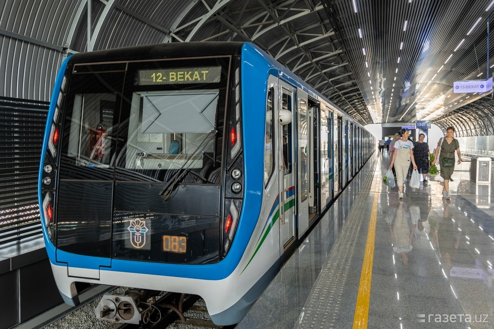
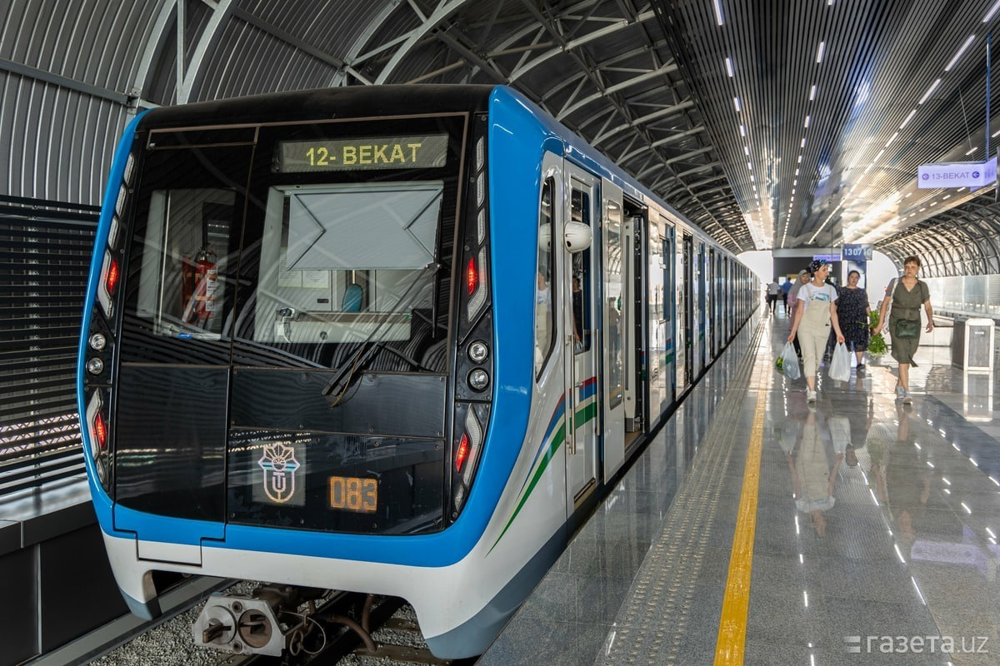
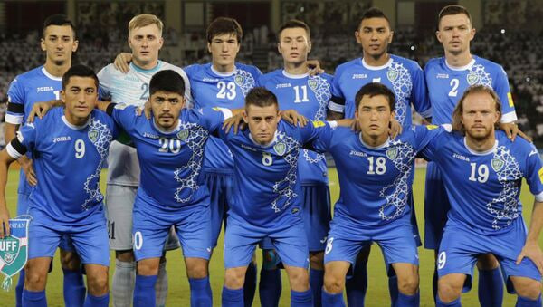

🇺🇿 Toshkentda yangi metro yo‘nalishi ishga tushdi
1-noyabr, 2025
Toshkent shahrida “Yangi Hayot” deb nomlangan yangi metro yo‘nalishi ochildi. Bu loyiha poytaxt transport tizimini yanada qulay qiladi.
O‘zbekiston va dunyodan eng so‘nggi yangiliklar
1-noyabr, 2025
Toshkent shahrida “Yangi Hayot” deb nomlangan yangi metro yo‘nalishi ochildi. Bu loyiha poytaxt transport tizimini yanada qulay qiladi.
1-noyabr, 2025
O‘zbekiston futbol terma jamoasi Saudiya Arabistonini 2:1 hisobida mag‘lub etdi va JCH saralash bosqichida muhim g‘alabaga erishdi.
31-oktabr, 2025
O‘zbekiston IT Park markazida 50 dan ortiq yangi texnologik startaplar taqdimotini o‘tkazdi. Tadbir sun’iy intellekt va innovatsion yechimlarga bag‘ishlandi.
Xush kelibsiz! Bilim olamiga yangi qadam tashlang
BilimUyi — bu zamonaviy kutubxona, unda kitoblar, maqolalar va multimedia resurslari jamlangan. Maqsadimiz — har kim uchun bilimni tez va qulay yetkazish.
Amerika adabiyotining mashhur asari, orzular va boylik haqida.
Hayot va sevgining ma’nosini o‘rgatadigan ertak.
.jpg)
Inson, tarix va falsafani aks ettiruvchi epik roman.
Email: info@bilimuyi.uz
Manzil: Toshkent shahri, Amir Temur ko‘chasi, 50-uy
“BilimUyi — bu bilim olamiga tezkor kirish va cheksiz imkoniyatlar eshigi.”
Ushbu web-saytda ro‘yxatlar va ularning turlari yordamida o‘zbek milliy taomlari haqida ma’lumot beriladi.
| № | Mahsulot Nomi | Kategoriyasi | Reytingi |
|---|---|---|---|
| 1 | Samsung Galaxy A54 | Smartfon | 4.7 |
| 2 | Dell Inspiron 15 | Noutbuk | 4.5 |
| 3 | HP DeskJet 2130 | Printer | 4.3 |
| № | Taom Nomi | Turi | Narxi |
|---|---|---|---|
| 1 | Lag'mon | Issiq ovqat | 25 000 so'm |
| 2 | Shashlik | Go'shtli | 30 000 so'm |
| 3 | Osh | Milliy taom | 28 000 so'm |
| Kun | 1-dars | 2-dars | 3-dars | 4-dars | Lunch | 5-6 dars | |
|---|---|---|---|---|---|---|---|
| Dushanba | Fizika | Matematika | Kimyo | Ona tili | Tushlik | Laboratoriya | |
| Seshanba | Tarix | Geografiya | Biologiya | Sport | Amaliy ish | ||
| Chorshanba | Algebra | Ingliz tili | Kimyo | Fizika | Laboratoriya | ||
| Payshanba | Adabiyot | Tarix | Geometriya | Ona tili | Seminar | ||
| Juma | Matematika | Fizika | Texnologiya | Biologiya | Laboratoriya | ||
| № | Yo‘nalish | Kunlar soni | Narxi |
|---|---|---|---|
| 1 | Dubai - Abu Dhabi | 5 kun | $500 |
| 2 | Istanbul - Bursa | 7 kun | $750 |
| 3 | Kuala Lumpur - Langkawi | 6 kun | $680 |
| Mahsulot Nomi | Do‘konlar | ||
|---|---|---|---|
| Asaxiy | Texnomart | Goodzone | |
| iPhone 13 | 12 000 000 so'm | 11 800 000 so'm | 11 900 000 so'm |
| Xiaomi Redmi Note 12 | 3 200 000 so'm | 3 150 000 so'm | — |
| Smart TV 43" | Yangi keladi | 4 500 000 so'm | |
Gipermurojaatlar va tasvirlar bilan boyitilgan sayt
O‘zbek milliy oshxonasining eng mashhur taomi. Go‘sht, guruch, sabzi va ziravorlardan tayyorlanadi.
Palov haqida batafsilTandir yoki pechda pishiriladigan, go‘shtli yoki sabzavotli xamir taomi.
Somsa haqida batafsilQo‘l bilan cho‘zilgan xamir, sabzavotlar va go‘shtdan tayyorlanadigan noodli taom.
Lag‘mon haqida batafsilPalov — o‘zbek xalqining eng mashhur milliy taomidir. U go‘sht, sabzi, guruch, piyoz va ziravorlardan tayyorlanadi. Har bir viloyatda palov tayyorlashning o‘ziga xos uslubi mavjud. Masalan, Samarqand palovi va Farg‘ona palovi o‘z ta’mi bilan ajralib turadi.
Somsa — tandirda yoki duxovkada pishiriladigan go‘shtli yoki sabzavotli pirogdir. U o‘zining tiniq xamiri va mazali to‘ldirmasi bilan mashhur. Odatda, go‘sht, piyoz va ba’zan kartoshka bilan tayyorlanadi.
Lag‘mon — qo‘l bilan cho‘zilgan ugra va maxsus sabzavotli sousdan tayyorlanadigan mazali taom. U nafaqat O‘zbekistonda, balki Markaziy Osiyoning ko‘plab mamlakatlarida ham sevilib iste’mol qilinadi.
O'zbek xalqining milliy taomlari — o‘ziga xos ta’mi, boy tarixi va mehmondo‘stlik ramzidir.
Palov — o‘zbek milliy taomlarining eng mashhuri. U asosan guruch, sabzi, go‘sht va ziravorlardan tayyorlanadi. Har bir viloyatda palovning o‘ziga xos tayyorlanish usuli mavjud.
Somsa — tandirda pishiriladigan, go‘sht yoki sabzavot solingan xamir taomidir. Uning xushbo‘y hidi va tiniq ta’mi o‘zbek oshxonasining ajralmas qismi hisoblanadi.
Lag'mon — qo‘l bilan tortilgan uzun xamirli taom bo‘lib, sabzavot va go‘shtli qaynatma bilan tortiladi. U Farg‘ona vodiysi oshxonalarida keng tarqalgan.
Manti — bug‘da pishiriladigan, go‘sht yoki sabzavot solingan xamir taomidir. U odatda smetana yoki sirka bilan tortiladi.
Sho‘rva — go‘shtli va sabzavotli sho‘r taom bo‘lib, u iliq paytda iste’mol qilinadi va sovuq kunlarda juda foydali.
Plov, manti, samsa va boshqa an'anaviy taomlarimiz haqida qisqacha ma'lumot va rasmli kartalar. Sahifa Flexbox va Grid yordamida yozilgan.
Quyida O'zbek milliy taomlarining eng mashhurlari — har biri haqida qisqacha ma'lumot bilan.
Plov — guruch, go'sht, piyoz va sabzi asosida tayyorlanadi. Bayram va mehmonxonada pishiriladigan asosiy taomlardan biri.
iv class="card-footer"> AsosiyManti — yupqa xamirga o'ralgan go'sht va piyoz aralashmasi. Ko'pincha bug'da pishiriladi va suyuq yog' bilan servis qilinadi.
Samsa — go'shtli yoki kartoshkali to'ldirish bilan pechda pishiriladi. Nonushta va mehmondo'stlik uchun juda mashhur.

Shashlik — ochiq olovda pishirilgan go'shtdir. Ko'plab hududlarda yozgi sayr va bayramlarda tayyorlanadi.
Lag'mon — qo'l mehnati bilan tayyorlangan uzun nonli qovurilgan makaron va boy sho'rva. Sharqiy O'zbekiston hududlariga xos.

Chak-chak — asosan asal yoki shakar siropi bilan bog'langan mayda qovurilgan xamir bo'laklari. Bayramlarda va sovg'a sifatida beriladi.
O'zbek noni — patir shaklida bo'lib, tandirda pishiriladi. Har bir ovqat stolida muhim o'rin tutadi.
Palov, somsa, lag‘mon, manti — xalqimizning qadimiy taomlari siz uchun!
CSS Transition va Animatsiya asosida yaratilgan sahifa
JavaScriptning oddiy funksiyalari va o‘zgaruvchilaridan foydalanilgan kichik web sahifa
Quyidagi tugmani bosing va tasodifiy o‘zbek milliy taomi haqida ma’lumot oling:
Dunyo tan olgan mazali va sermahsul taomlarimiz bilan tanishing
O‘zbek oshxonasi – ming yillik tarixga ega, mehmondo‘stlik va saxiylik ramzi. Bu yerda eng mashhur milliy taomlarimiz haqida ma’lumot beramiz.
O‘zbek xalqining eng muhim va eng sevimli taomi. Guruch, go‘sht, sabzi, piyoz va ziravorlardan tayyorlanadi.
Qatiq yoki smetana bilan iste’mol qilinadigan xamir ichiga qiyma solib pishiriladigan taom.
Qo‘zi yoki mol go‘shtidan tayyorlanadigan ko‘mirda qovurilgan shish kabob.
Uyg‘ur va duxoba taomi bo‘lib, qo‘l bilan yasalgan uzun makaron va go‘shtli sousdan iborat.
Tandirda pishiriladigan qatlamali xamir ichiga go‘sht, kartoshka yoki qovoq solib pishiriladi.
Tandirda pishiriladigan turli shakldagi (obi-non, patir, shirma non) milliy nonlar.
JSON formatda ma’lumotlarni olish va filtrlash
| Taom nomi | Hudud | Asosiy masalliqlar |
|---|